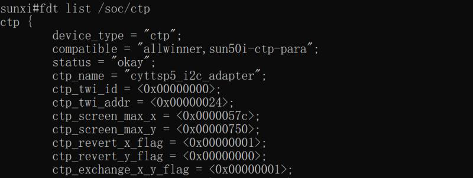
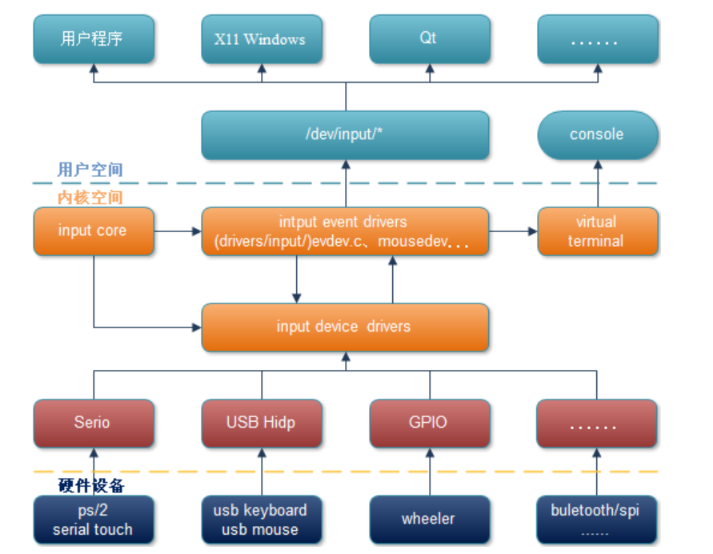
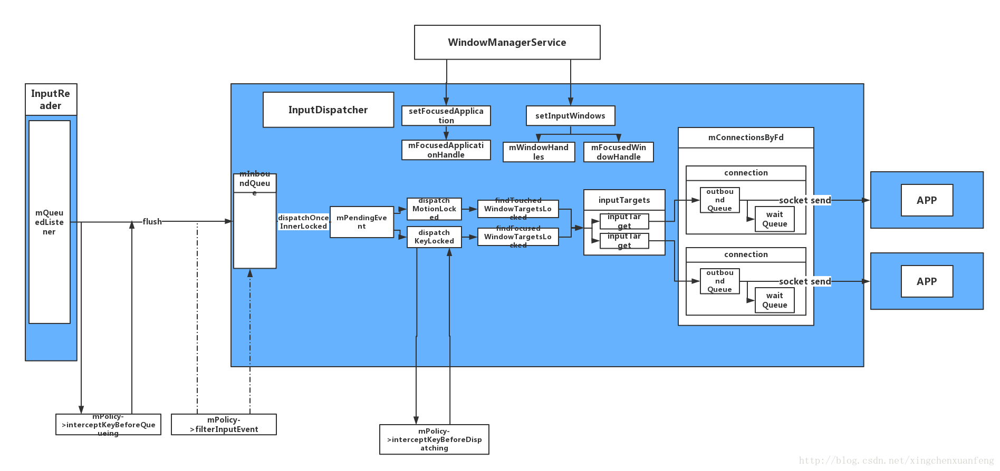
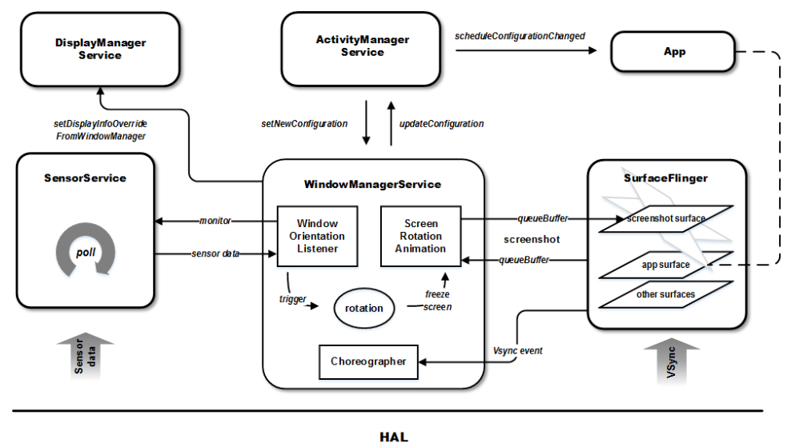
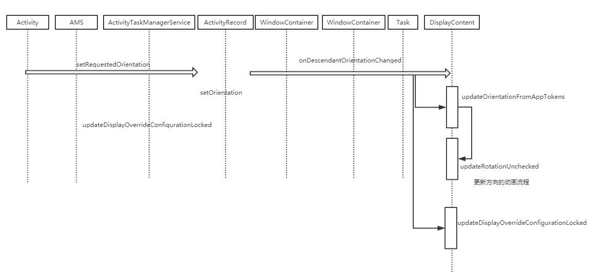
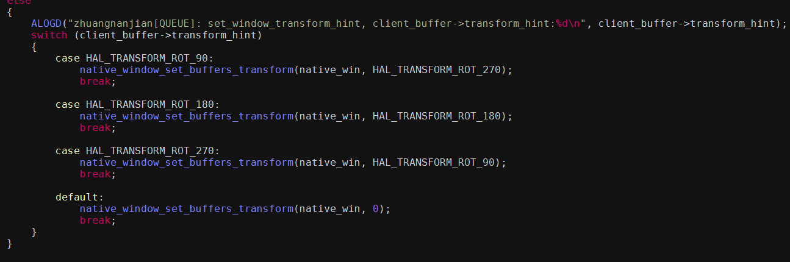
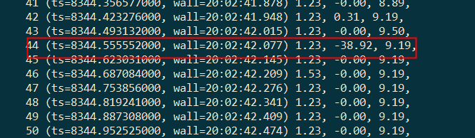

由于客户的选型需要，可能需要横屏竖用，或者竖屏横用；在P之前的android SDK中，谷歌并不支持相关的功能；所以需要原厂自行定制；在P上 MTK为统一刷GSI和不刷GSI方向的统一，向谷歌mainline提供了对应的补丁；之后在Q上谷歌又进行了相关的修改；使得安卓支持改变默认显示方向的功能也日趋稳定；当然也是会存在bug,如在android Q上就出现了开机动画和应用启动动画异常问题（已解决）；但为了统一后续android平台下的横屏竖用使用配置；全志平台androidQ横屏竖用也是依托这个补丁进行横屏竖用的实现；
有兴趣的可以访问这个网站查看更多的信息：GSI 支持横屏模式
一：梳理安卓TP,gsensor,surfaceflinger中rotation的系数之间的关系，客户配置地方；
二：系统旋转监听以及应用旋转方向申请；
三：现有显示框架支持横屏竖用原理；
为了分离linux环境（dragonboard）和android环境的中TP的方向，使其不相互影响，为了使用android的新朝向，我们将TP方向更改的配置放到dtbo中；在android source并lunch对应的版型后，cbd即可到对应的路径；本文将以全志A50 A7版型为例讲解配置；
&soc {
dtbo_version = <0x00000001>;
dtbo{
compatible = "allwinner,sunxi-dtbo";
dtbo_type = <1>;
};
+ ctp {
+ ctp_screen_max_x = <480>;
+ ctp_screen_max_y = <800>;
+ ctp_revert_y_flag = <1>;
+ ctp_exchange_x_y_flag = <0>;
+ };
};
参数解释：
ctp_screen_max_x 触摸板的x轴最大坐标
ctp_screen_max_y 触摸板的y轴最大坐标
ctp_revert_x_flag 是否需要翻转x坐标，需要则置1，反之置0
ctp_revert_y_flag 是否需要翻转y坐标，需要则置1，反之置0
ctp_exchange_x_y_flag 是否需要x轴y轴坐标对换
修改好需要重新编译和打包内核，在配置该参数的需注意检查驱动是否支持该方法；
非安全固件可以通过命令行修改参数进行验证，将default/env.cfg中将bootdelay改成3s,配合串口在uboot启动过程中按住enter键进入uboot命令行，用fdt 命令的修改验证；
步骤如下：

如当下需要修改ctp_screen_max_x,可按
fdt set /soc/ctp ctp_screen_max_x <0x01>
fdt list /soc/ctp 确认是否修改到
fdt save //保存配置
boot

+ # change SurfaceFlinger Orientation(0, 90, 180, 270)
+ SF_PRIMARY_DISPLAY_ORIENTATION := 90
+ #change minui Orientation
+ #ROTATION_NONE=0, ROTATION_RIGHT=90, ROTATION_DOWN=180, ROTATION_LEFT=270
+ PRODUCT_SYSTEM_DEFAULT_PROPERTIES += \
ro.minui.default_rotation=ROTATION_RIGHT
+ #change Gsensor rotation(0, 90, 180. 270)
+ PRODUCT_PROPERTY_OVERRIDES += \
ro.vendor.sf.rotation=270
在有摄像头的方案下面还需调整自己的摄像头方向，提供的配置地方有：
configs/camera.cfg
camera_orientation //可设置0，90，180，270
hawkview/sensor_list_cfg.ini
sensor_hflip0 //水平反转
sensor_vflip0 //垂直反转
客户可以adb remount,选择busybox vi到对应的文件下；先调整camera的朝向，在调整镜像；
vendor/etc/camera.cfg
vendor/etc/hawkview/sensor_list_cfg.ini
对于Gsensor还有一种改法与camera一样，在方案目录下面有相应的文件可以提供配置;方案商的话其实根据想要的屏幕朝向和sensor的摆放，配置这个文件会是一件更为简单和兼容性更好的操作；
目录为config/gsensor.cfg,
gsensor_name = sc7660
gsensor_direct_x = false //x轴是否反向
gsensor_direct_y = false //y轴是否反向
gsensor_direct_z = false //z轴是否反向
gsensor_xy_revert = true //是否反转x,y轴
gsensor坐标系：

匹配规则：
安卓是用的右手坐标系，Z轴相对屏幕朝外，gsensor的数据是一个三维数组，values[0]对应的x轴的值，value[1]对应的y轴,value[2]对应的Z轴，将相对轴竖直朝上放置时候，以该轴为对应的值为正（约9.8左右），其他两轴对应为0为准；
对于Q平台上需要更改默认屏幕方向，为兼容多个设备，且统一后续平台谷歌方案配置需要配置的选项如上述所述配置Android显示方向，recovery显示方向，TP方向，gsensor，camera，以及bootlogo图片方向；
至此，若是只需要知道怎么配置的可以不看以下的章节；

借着梳理这个事件上报流程，我们也可以将主要的架构和流程涵盖；
以TP gslx680为例：
static int gsl_ts_probe(struct i2c_client *client,
const struct i2c_device_id *id)
{
...
queue_work(gslX680_wq, &glsX680_init_work);
-->glsX680_init_events
ret = input_request_int(&(config_info.input_type), gsl_ts_irq,
CTP_IRQ_MODE, ts_init);
gsl_ts_init_ts
-->set_bit(ABS_MT_POSITION_X, input_device->absbit);
set_bit(ABS_MT_POSITION_Y, input_device->absbit);
set_bit(ABS_MT_TOUCH_MAJOR, input_device->absbit);
set_bit(ABS_MT_WIDTH_MAJOR, input_device->absbit);
input_set_abs_params(input_device, ABS_MT_POSITION_X, 0,
SCREEN_MAX_X, 0, 0);
input_set_abs_params(input_device, ABS_MT_POSITION_Y, 0,
SCREEN_MAX_Y, 0, 0);
input_set_abs_params(input_device, ABS_MT_TOUCH_MAJOR, 0,
PRESS_MAX, 0, 0);
input_set_abs_params(input_device, ABS_MT_WIDTH_MAJOR, 0, 200, 0, 0);
设置TP支持的设备属性和参数
--> input_device = input_allocate_device();
c = input_register_device(input_device);
跟常见的platform总线模型一样，会将input_device加到input_device_list
在register的时候通过match在input_handler_list中找到对应的handler
流程如下所示：
--> input_attach_handler(dev, handler);
id = input_match_device(handler, dev);
error = handler->connect(handler, dev, id);
这里就会调到：evdev.c中的event_connect
-->error = input_register_handle(&evdev->handle);
evdev基本上支持所有类型，所以这里TP将会与evdev通过handle进行连接
...
}
接下来就是中断处理流程，这里我们就能看出他的层级关系；
input driver -->input_dev
gsl_ts_irq{
queue_work(ts->wq, &ts->work);
gsl_ts_xy_worker
process_gslX680_data
input_report_abs(ts->input, ABS_MT_TRACKING_ID, id);
input_report_abs(ts->input, ABS_MT_TOUCH_MAJOR, pressure);
input_report_abs(ts->input, ABS_MT_POSITION_X, x);
input_report_abs(ts->input, ABS_MT_POSITION_Y, y);
input_report_abs(ts->input, ABS_MT_WIDTH_MAJOR, 1);
}
input core
input_event(dev, EV_ABS, code, value);
input_handle_event(dev, type, code, value);
input_pass_values(dev, dev->vals, dev->num_vals);
count = input_to_handler(handle, vals, count);
handler->event(handle, v->type, v->code, v->value);
evdev --> input_handler
evdev_event
evdev_events(handle, vals, 1);
evdev_pass_values(client, vals, count, ev_time);
__pass_event(client, &event);
-->kill_fasync(&client->fasync, SIGIO, POLL_IN);
//走到这里的时候epoll_wait dev/input/xxx的监听就能收到消息
wake_up_interruptible(&evdev->wait);
简而言之：input_dev在中断处理函数里面上报事件 -> input_core找到对应的handler -> input_handler:如edev通过___pass_event将事件上报给用户层；

流程简单介绍：
一：APP setView建立inputChannel和window的连接
当一个应用程序有Activity能接受用户输入，他就要将自己的Window（ViewRoot）通过setView（)注册到Window Manager Service中；
frameworks/base/core/java/android/view/ViewRootImpl.java
public void setView(View view, WindowManager.LayoutParams attrs, View panelParentView) {
...
requestLayout();//对控件树进行测量，布局，向WMS申请修改窗口属性以及重绘的所有工作
if ((mWindowAttributes.inputFeatures
& WindowManager.LayoutParams.INPUT_FEATURE_NO_INPUT_CHANNEL) == 0) {
mInputChannel = new InputChannel();
}
//服务端过程
res = mWindowSession.addToDisplay(mWindow, mSeq, mWindowAttributes,
getHostVisibility(), mDisplay.getDisplayId(), mTmpFrame,
mAttachInfo.mContentInsets, mAttachInfo.mStableInsets,
mAttachInfo.mOutsets, mAttachInfo.mDisplayCutout, mInputChannel,
mTempInsets);
--> mService.addWindow
-->openInputChannel
InputChannel[] inputChannels = InputChannel.openInputChannelPair(name);
mInputChannel = inputChannels[0];
mClientChannel = inputChannels[1];
-->mClientChannel.transferTo(outInputChannel);//将socketPair的另外一个FD放在参数OutputChannel里，创建WindowInputEventRecevier用于接受InputDispatchor传来的事件；后者同样通过AddFd()将读端SocketFd加入到Looper中，这样一旦InputDispatchor发送Event,Looper就会立即醒来处理；
-->mWmService.mInputManager.registerInputChannel(mInputChannel, mClient.asBinder());//调用到InputDispacher的RegisterInputChannel()方法；InputDispacher会通过addFd 将channel的fd加入到loop中，这样，只要某个Window在Socket的另一端写入数据，Looper就会马上从睡眠中醒来，进行处理；
mInputEventReceiver = new WindowInputEventReceiver(mInputChannel,
Looper.myLooper());
...
}
建立Window和InputDispatch的联系；
二：framework层的收集和分发
framework/native/services/inputflinger/EventHub.cpp
EventHub::EventHub(void) : ｛
mEpollFd = epoll_create1(EPOLL_CLOEXEC);
mINotifyFd = inotify_init();
mInputWd = inotify_add_watch(mINotifyFd, DEVICE_PATH, IN_DELETE | IN_CREATE);
int result = epoll_ctl(mEpollFd, EPOLL_CTL_ADD, mINotifyFd, &eventItem);
result = fcntl(mWakeReadPipeFd, F_SETFL, O_NONBLOCK);
result = epoll_ctl(mEpollFd, EPOLL_CTL_ADD, mWakeReadPipeFd, &eventItem);
｝
size_t EventHub::getEvents(int timeoutMillis, RawEvent* buffer, size_t bufferSize) {
for(;;){
...
nRead = read(mWakeReadPipeFd, buffer, sizeof(buffer));
int pollResult = epoll_wait(mEpollFd, mPendingEventItems, EPOLL_MAX_EVENTS, timeoutMillis);
...
}
｝
总结：Eventhub的作用是监听，读取/dev/input目录下产生的新事件，如节点的增删以及事件的上报，并封装成RawEvent结构体共InputReader使用。
framework/native/services/inputflinger/InputReader.cpp
void InputReader::loopOnce() {
size_t count = mEventHub->getEvents(timeoutMillis, mEventBuffer, EVENT_BUFFER_SIZE);
if (count) {
processEventsLocked(mEventBuffer, count);
-->device->process(rawEvents, count);
-->mapper->process(rawEvent); //将事件压入队列
}
mQueuedListener->flush();//将事件进行分发
}
void TouchInputMapper::process(const RawEvent* rawEvent) {
...
sync(rawEvent->when);
-->processRawTouches(false /*timeout*/)
-->cookAndDispatch(mCurrentRawState.when);
-->dispatchTouches(when, policyFlags);
--> dispatchMotion(when, policyFlags, mSource,
AMOTION_EVENT_ACTION_MOVE, 0, 0, metaState, buttonState,
AMOTION_EVENT_EDGE_FLAG_NONE,
mCurrentCookedState.deviceTimestamp,
mCurrentCookedState.cookedPointerData.pointerProperties,
mCurrentCookedState.cookedPointerData.pointerCoords,
mCurrentCookedState.cookedPointerData.idToIndex,
currentIdBits, -1,
mOrientedXPrecision, mOrientedYPrecision, mDownTime);
-->getListener()->notifyMotion(&args);
-->mArgsQueue.push_back(new NotifySwitchArgs(*args));
...
}
void QueuedInputListener::flush() {
args->notify(mInnerListener);
-->listener->notifyMotion(this);//这里的listen就是InputDispatcher了
mArgsQueue.clear();
}
总结：InputReader的就是循环的读取EventHub中的数据，然后通过InputDispatcher进行分发
framework/native/services/inputflinger/InputDispatcher.cpp
void InputDispatcher::notifyMotion(const NotifyMotionArgs* args) {
MotionEntry* newEntry = new MotionEntry(args->sequenceNum, args->eventTime,
args->deviceId, args->source, args->displayId, policyFlags,
args->action, args->actionButton, args->flags,
args->metaState, args->buttonState, args->classification,
args->edgeFlags, args->xPrecision, args->yPrecision, args->downTime,
args->pointerCount, args->pointerProperties, args->pointerCoords, 0, 0);
needWake = enqueueInboundEventLocked(newEntry);
}
bool InputDispatcherThread::threadLoop() {
mDispatcher->dispatchOnce();
-->dispatchOnceInnerLocked(&nextWakeupTime);
-->done = dispatchMotionLocked(currentTime, typedEntry,
&dropReason, nextWakeupTime);
-->injectionResult = findTouchedWindowTargetsLocked(currentTime,
entry, inputTargets, nextWakeupTime, &conflictingPointerActions);
-->dispatchEventLocked(currentTime, entry, inputTargets);
-->getConnectionIndexLocked(inputTarget.inputChannel);//这个inputChannel用于与window实例通信
-->prepareDispatchCycleLocked
-->enqueueDispatchEntriesLocked
-->startDispatchCycleLocked
-->publishMotionEvent
-->mChannel->sendMessage(&msg)
return true;
}
InputDispatcher的作用就是通过sendMessage进行跨进程通信，把msg发给对应的window
如果是按键类型的时间，那么就会通过notifyKey的流程，然后传递给PhoneWindowManager这个读者可以自行梳理
流程总结：内核将原始事件写入设备节点中，InputReader不断地通过Eventhub将原始事件取出来并翻译加工成android输入事件，然后交给InputDispacther.InputDispactcher根据WMS提供的窗口信息，将事件交给格式的窗口，窗口的ViewRootimpl对象再沿着控件树将事件派发给感兴趣的控件，控件对其接收到的时间做出响应，更新自己的画面，执行特定的动作；
Sensor的框架分为三个层次，客户层，服务层，HAL层，服务端负责从HAL层读取数据，并将数据写到管道中，客户端通过管道读取服务端数据；具体细节可以看这两份文档
流程图：

系统从SystemUI或者setting中获取到是否开启自动旋转；最终设置到mUserRotationMode和mUserRotation
systemUI:
./services/core/java/com/android/server/wm/DisplayRotation.java
void freezeRotation(int rotation) {
rotation = (rotation == -1) ? mDisplayContent.getRotation() : rotation;
setUserRotation(WindowManagerPolicy.USER_ROTATION_LOCKED, rotation);
}
void thawRotation() {
setUserRotation(WindowManagerPolicy.USER_ROTATION_FREE, mUserRotation);
}
settings:
updateSettings() {
final int userRotation = Settings.System.getIntForUser(resolver,
Settings.System.USER_ROTATION, Surface.ROTATION_0,
UserHandle.USER_CURRENT);
final int userRotationMode = Settings.System.getIntForUser(resolver,
Settings.System.ACCELEROMETER_ROTATION, 0, UserHandle.USER_CURRENT) != 0
? WindowManagerPolicy.USER_ROTATION_FREE
: WindowManagerPolicy.USER_ROTATION_LOCKED;
updateOrientationListenerLw()
-->mOrientationListener.enable(true /* clearCurrentRotation */);
}
services/core/java/com/android/server/policy/WindowOrientationListener.java
一：注册监听
public void enable(boolean clearCurrentRotation) {
if (mSensor.getType() == Sensor.TYPE_ACCELEROMETER) {
mSensorManager.registerListener(
mOrientationJudge, mSensor, mRate, DEFAULT_BATCH_LATENCY, mHandler);
} else {
mSensorManager.registerListener(mOrientationJudge, mSensor, mRate, mHandler);
}
二：sensor有数据的时候就会发一个回调
public void onSensorChanged(SensorEvent event) {
这里就会计算出一个proposedRotation，分发给需要的模块
onProposedRotationChanged(proposedRotation);
｝
services/core/java/com/android/server/wm/DisplayRotation.java
三：决策是否旋转和启动旋转动画流程
public void run() {
// Send interaction hint to improve redraw performance.
mService.mPowerManagerInternal.powerHint(PowerHint.LAUNCH, 1);
if (isRotationChoicePossible(mCurrentAppOrientation)) {
final boolean isValid = isValidRotationChoice(mRotation);
sendProposedRotationChangeToStatusBarInternal(mRotation, isValid);
} else {
mService.updateRotation(false /* alwaysSendConfiguration */,
false /* forceRelayout */);
}
}
rotation:旋转方向是指界面（不是手机）相对于默认情况情况顺时针旋转的角度，平板一般默认横屏，而小屏幕设备默认竖屏；
frameworks/base/core/java/android/view/Surface.java
public static final int ROTATION_0 = 0;
public static final int ROTATION_90 = 1;
public static final int ROTATION_180 = 2;
public static final int ROTATION_270 = 3;
orientation:分为两种情况，一个是ActivityInfo.java,另一个在Configuration.java.前者具体来说是ActivityInfo.screenOrientation,这个值用于记录App强制设定的方向或者旋转模式。具体代码如下：
rotation旋转的是物体坐标系，而orientation旋转的是世界坐标系，即观察视角；
对于应用开发者而言可以通过调用如下api去申请屏幕朝向
core/java/android/app/Activity.java
setRequestedOrientation
获取命令如下：
dumpsys window | grep mCurrentAppOrientation
frameworks/base/core/java/android/content/pm/ActivityInfo.java
/**
* The preferred screen orientation this activity would like to run in.
* From the {@link android.R.attr#screenOrientation} attribute, one of
* {@link #SCREEN_ORIENTATION_UNSPECIFIED}, -1；//未指定，默认值，由安卓选择合适方向，关闭系统旋转屏幕，就不会转动屏幕
* {@link #SCREEN_ORIENTATION_LANDSCAPE}, 0//横屏
* {@link #SCREEN_ORIENTATION_PORTRAIT}, 1//竖屏
* {@link #SCREEN_ORIENTATION_USER}, 2//用户选择方向
* {@link #SCREEN_ORIENTATION_BEHIND}, 3//继承Activity堆栈中当前Activity下面的那个Activity的方向
* {@link #SCREEN_ORIENTATION_SENSOR}, 4//由物理感应器决定显示方向
* {@link #SCREEN_ORIENTATION_NOSENSOR}, 5//忽略物理感应器
* {@link #SCREEN_ORIENTATION_SENSOR_LANDSCAPE}, 6//锁定屏幕横屏，可以180旋转，相当于SCREEN_ORIENTATION_USER_LANDSCAPE并且打开自动旋转功能
* {@link #SCREEN_ORIENTATION_SENSOR_PORTRAIT}, 7//锁定屏幕竖屏，可以180旋转
* {@link #SCREEN_ORIENTATION_REVERSE_LANDSCAPE}, 8//强制横屏方向
* {@link #SCREEN_ORIENTATION_REVERSE_PORTRAIT}, 9//竖屏方向转换
* {@link #SCREEN_ORIENTATION_FULL_SENSOR}, 10//当手机底部朝上时，根据重力变换朝向，形成相对竖屏旋转180的效果
* {@link #SCREEN_ORIENTATION_USER_LANDSCAPE}, 11//横屏显示，当打开自动旋转功能时，如果用户在横屏方向上调整方位，屏幕也会跟着变动
* {@link #SCREEN_ORIENTATION_USER_PORTRAIT}, 12//竖屏显示
* {@link #SCREEN_ORIENTATION_FULL_USER}, 13//相当于默认打开自动旋转功能
* {@link #SCREEN_ORIENTATION_LOCKED},14 //锁定屏幕方向
*/
流程图如下所示：

hardware/interface
configstore/1.1/default/surfaceflinger.mk
LOCAL_CFLAGS += -DPRIMARY_DISPLAY_ORIENTATION=$(SF_PRIMARY_DISPLAY_ORIENTATION)
configstore/1.1/default/SurfaceFlingerConfigs.cpp
Return<void> SurfaceFlingerConfigs::primaryDisplayOrientation(
...
orientation = PRIMARY_DISPLAY_ORIENTATION;
...
}
services/surfaceflinger/SurfaceFlingerProperties.cpp
SurfaceFlingerProperties::primary_display_orientation_values primary_display_orientation(
SurfaceFlingerProperties::primary_display_orientation_values defaultValue) {
...
DisplayOrientation result =
getDisplayOrientation<V1_1::ISurfaceFlingerConfigs,
&V1_1::ISurfaceFlingerConfigs::primaryDisplayOrientation>(
configDefault);
return SurfaceFlingerProperties::...
...
}
services/surfaceflinger/SurfaceFlinger.cpp
SurfaceFlinger::primaryDisplayOrientation = DisplayState::...
creationArgs.displayInstallOrientation = isInternalDisplay ? primaryDisplayOrientation : DisplayState::eOrientationDefault;
在SurfaceFlinger中初始化primaryDisplayOrientation，当应用获取显示配置的时候getDisplayConfigs，此时的应用就能够获取到对应的竖屏配置了；
status_t SurfaceFlinger::getDisplayConfigs(const sp<IBinder>& displayToken,
Vector<DisplayInfo>* configs) {
...
if (displayId == getInternalDisplayIdLocked() &&
primaryDisplayOrientation & DisplayState::eOrientationSwapMask) {
std::swap(info.w, info.h);
...
}
在DisplayDevice中就会初始化mDisplayInstallOrientation,在设置矩阵的时候oritentationToTransform就会被篡改；
void DisplayDevice::setProjection(int orientation,
const Rect& newViewport, const Rect& newFrame) {
...
if (isPrimary()) {
DisplayDevice::orientationToTransfrom(
(orientation + mDisplayInstallOrientation) % (DisplayState::eOrientation270 + 1),
w, h, &R);
...
}
这样给到GPU的Transform就会被欺骗带有一个角度；

system/core/libsystem/include/system/graphics-base-v1.0.h
typedef enum {
HAL_TRANSFORM_FLIP_H = 1, // (1 << 0)
HAL_TRANSFORM_FLIP_V = 2, // (1 << 1)
HAL_TRANSFORM_ROT_90 = 4, // (1 << 2)
HAL_TRANSFORM_ROT_180 = 3, // (FLIP_H | FLIP_V)
HAL_TRANSFORM_ROT_270 = 7, // ((FLIP_H | FLIP_V) | ROT_90)
} android_transform_t;
include/gui/LayerState.h
struct DisplayState {
enum {
eOrientationDefault = 0,
eOrientation90 = 1,
eOrientation180 = 2,
eOrientation270 = 3,
eOrientationUnchanged = 4,
eOrientationSwapMask = 0x01
};
这样就实现了从应用到显示横屏竖用的欺骗流程
1. 模拟文本 input text "hello,word"
2. 模拟按键 input keyevent POWER
3. 模拟滑动 input swipe 0 20 300 500
4. 模拟屏幕轻触：input tap 100 400
5. 获取输入事件的总类：getevent -p
6. input keyevent --longpress POWER
settings put system accelerometer_rotation 0 //关闭自动旋转
settings put system user_rotation 0
settings put system user_rotation 3
settings put system show_touches 1
settings put system pointer_location 1
可以利用查看目前sensor上报的事件值
dumpsys sensorservice | grep wall

图解Android-AndroidGUI 系统（5）-Android的Event Input System